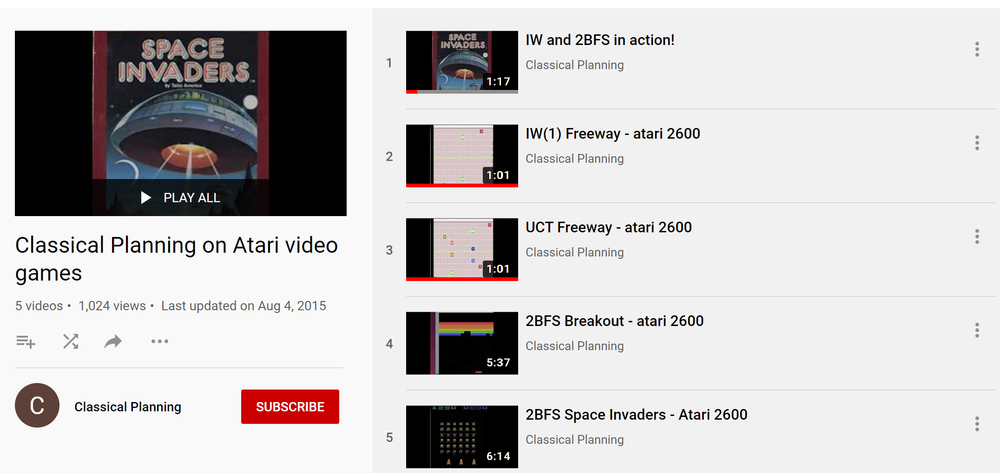

In this project we used width-based planning algorithms with a simulator instead of a PDDL description. We tested the planners on the The Atari 2600 games supported in The Arcade Learning Environment (ALE) -- a platform for AI research.
See http://www.arcadelearningenvironment.org for details.

Source CodeLink
Download the code at zip file or copy the repository using the following command
git clone https://github.com/miquelramirez/ALE-Atari-Width.git <directory>
will create a clone of the ALE master repository containing the game engine with the planners and the roms files of the tested games in <directory>. The directory is created if it does not yet exist.
Atari Width-based plannersLink
The Classical Planning algorithms are located in:
IW(1)Link
2BFSLink
To compile, rename the makefile either for linux or mac
Running ALE width-based plannersLink
The command to run IW1 is
./ale -display_screen true -discount_factor 0.995 -randomize_successor_novelty true -max_sim_steps_per_frame 150000 -player_agent search_agent -search_method iw1 (ROM_PATH)`
The command to run 2BFS is
./ale -display_screen true -discount_factor 0.995 -randomize_successor_novelty true -max_sim_steps_per_frame 150000 -player_agent search_agent -search_method bfs (ROM_PATH)`
and you have to substitute ROM_PATH for any of the games under supported_roms folder.
- max_sim_steps_per_frame* sets your budget, i.e. how many frames you can expand per lookahead. Each node is 5 frames of game play, so 150,000, is equivalent to 30,000 nodes generated. You don\'t need that many to find rewards, so you can use a smaller number to play the game much faster. 150,000 was the parameter chosen by Bellemare et al. The most expensive computation is calling the simulator to generate the successor state.
Python scriptsLink
We wrote scripts to make life easier for experimentation:
- Evaluate_agents.py may help you to run experiments.
We wrote some code to record the games, add the following flag to the ./ale command
-record_trajectory true
and then you can replay the game using
- replay.py <state_trajectory_alg_game_episode.i file>
Videos / papersLink
YoutubeLink
You can watch the width-basd planners in 
PaperLink
You can read more about it in the IJCAI 2015 paper
PosterLink
You can also have a quick introduction to the approach by looking at the poster presented in IJCAI too.
CreditsLink
We want to thank Marc Bellemare for making the ALE code available and the research group at U. Alberta.
The Classical Planning algorithms code is adapted from the Lightweight Automated Planning Toolkit (www.LAPKT.org).
This project is a joint work by Nir Lipovetzky, Miquel Ramirez and Hector Geffner.